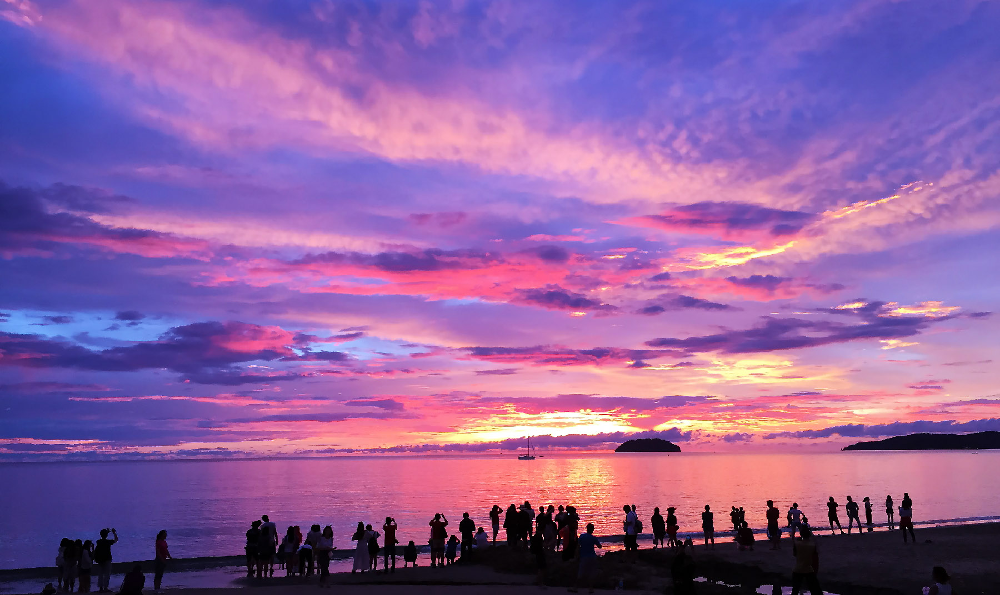

In addition to its natural beauty, Tanjung Aru is also a hub for local street food and vibrant culture. Food stalls near the beach offer delicious snacks such as satay, grilled seafood, coconut shakes, and mango desserts. Visitors can also enjoy watching planes land at the nearby airport — a unique experience as aircraft fly low right over the beach, perfect for photography lovers.